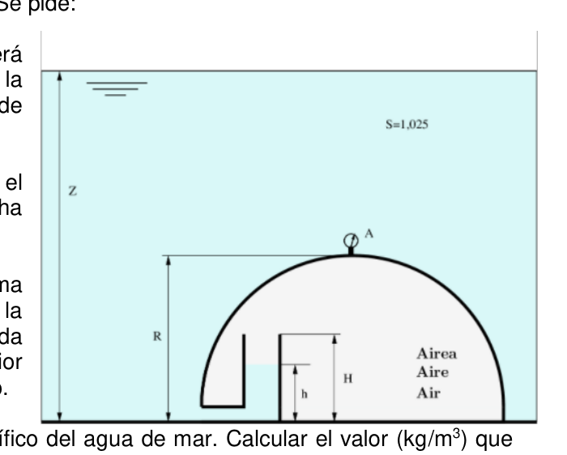
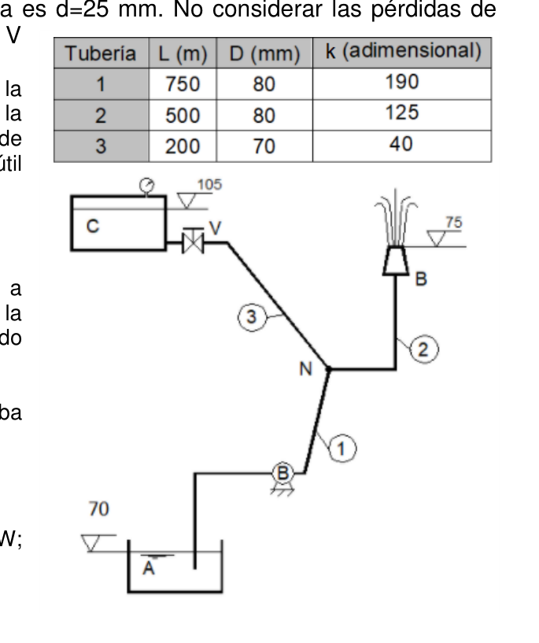
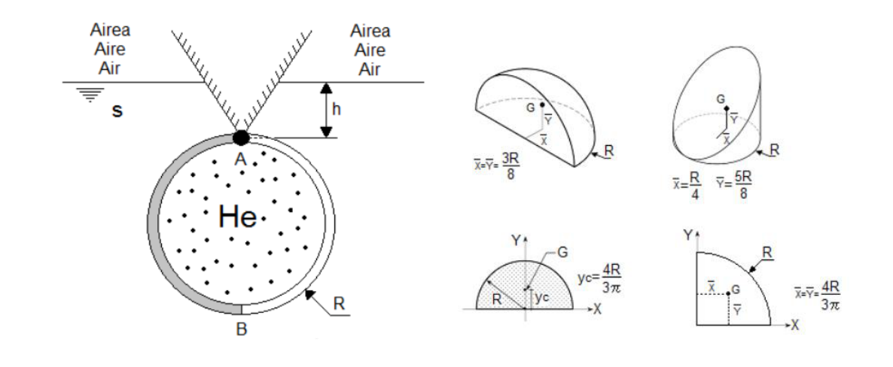
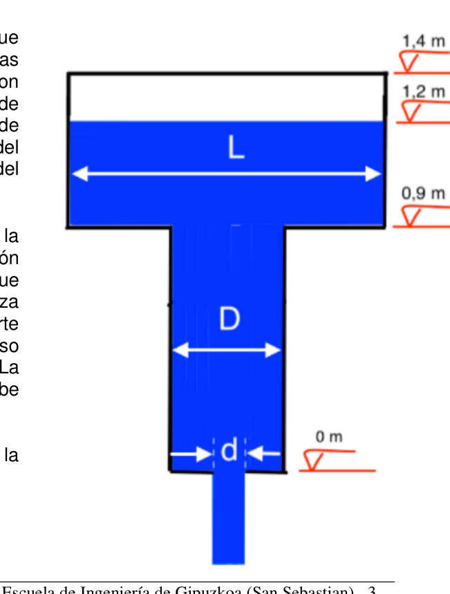

| Magnitud | Símbolo | Valor |
|---|---|---|
| Masa inicial de aire | $m_0$ | $5{,}6\ \text{kg}$ |
| Presión absoluta inicial | $P_0$ | $9{,}6\ \text{bar} = 9{,}6 \times 10^5\ \text{Pa}$ |
| Temperatura inicial | $T_0$ | $25{^\circ}\text{C} = 298{,}15\ \text{K}$ |
| Masa final (tras extracción) | $m_f$ | $m_0/2 = 2{,}8\ \text{kg}$ |
| Temperatura final | $T_f$ | $2 \times 25{^\circ}\text{C} = 50{^\circ}\text{C} = 323{,}15\ \text{K}$ |
| Constante del aire | $R$ | $287\ \text{J/(kg} \cdot \text{K)}$ |
| Coef. adiabático | $\gamma$ | $1{,}4$ |
| Presión atmosférica | $P_{atm}$ | $1{,}01325 \times 10^5\ \text{Pa}$ |
¿Por qué PV = mRT?
El aire en condiciones normales se comporta como gas ideal: las moléculas no interaccionan significativamente y su volumen propio es despreciable frente al del recipiente. La ecuación $PV = mRT$ relaciona presión, volumen, masa y temperatura de estado. Con el recipiente rígido, $V$ es constante, lo que simplifica el análisis al desaparecer una variable.
Módulo de elasticidad y proceso adiabático
$K = -V\,dP/dV$ mide la resistencia a la compresión. Para un gas ideal en proceso adiabático (compresión rápida sin intercambio de calor), $PV^\gamma = \text{cte}$, lo que conduce a $K = \gamma P$. Si fuera isotérmico (compresión lenta), $K = P$. El módulo del aire ($\sim$1–2 MPa) es ~1000 veces menor que el del agua ($\sim$2,1 GPa).
Nota sobre temperatura doble
El enunciado dice "el doble de la temperatura inicial en Celsius", es decir $T_f = 2 \times 25 = 50{^\circ}\text{C}$, no el doble en Kelvin. Este detalle es frecuente en examen y cambia el resultado.
¿Por qué? El volumen del recipiente se obtiene de la masa conocida dividida entre la densidad dada a presión atmosférica. Este $V_0$ permanece constante (recipiente rígido) para los cálculos siguientes.
De la ley del gas ideal en el instante inicial:
$$V = \frac{m_0 \cdot R \cdot T_0}{P_0} = \frac{5{,}6 \times 287 \times 298{,}15}{9{,}6 \times 10^5} = \frac{479\,165}{960\,000} \approx \boxed{0{,}499\ \text{m}^3}$$Densidad inicial:
$$\rho_0 = \frac{m_0}{V} = \frac{5{,}6}{0{,}499} \approx \boxed{11{,}22\ \text{kg/m}^3}$$¿Por qué? Al añadir masa en volumen constante, la densidad sube y, con ella, la presión ($p \propto \rho$ a $T$ constante). La presión manométrica final es $p_{man} = p_{abs} - p_{atm}$.
En el instante final: $m_f = 2{,}8\ \text{kg}$, $T_f = 323{,}15\ \text{K}$, $V = 0{,}499\ \text{m}^3$ (rígido).
$$P_f = \frac{m_f \cdot R \cdot T_f}{V} = \frac{2{,}8 \times 287 \times 323{,}15}{0{,}499} \approx 5{,}202 \times 10^5\ \text{Pa}$$Presión manométrica:
$$P_{man} = P_f - P_{atm} = 5{,}202 \times 10^5 - 1{,}013 \times 10^5 = 4{,}189 \times 10^5\ \text{Pa}$$ $$P_{man} = \frac{4{,}189 \times 10^5}{9{,}81 \times 10^4} \approx \boxed{4{,}27\ \text{kgf/cm}^2}$$¿Por qué? El módulo $K_e = -\Delta p /(\Delta V/V_0)$ mide la resistencia del fluido a comprimirse. Para un gas ideal isotermo, $K_e = p_{abs}$. Su valor justifica si se puede tratar el fluido como incompresible o no.
Se evalúa en el instante inicial con proceso adiabático:
$$K = \gamma \cdot P_0 = 1{,}4 \times 9{,}6 \times 10^5 = 13{,}44 \times 10^5\ \text{Pa} \approx \boxed{1{,}344\ \text{MPa} \approx 1{,}38\ \text{MPa}}$$
| Magnitud | Símbolo | Valor |
|---|---|---|
| Radio del laboratorio | $R$ | $5{,}8\ \text{m}$ |
| Profundidad de diseño | $Z$ | $39{,}5\ \text{m}$ |
| Altura columna acceso | $h$ | $2{,}9\ \text{m}$ |
| Altura total acceso vertical | $H$ | $4{,}1\ \text{m}$ |
| Densidad agua de mar | $\rho_{mar}$ | $1025\ \text{kg/m}^3$ |
| Presión atmosférica | $P_{atm}$ | $101\,325\ \text{Pa}$ |
Principio fundamental de la hidrostática
En un fluido en reposo la presión aumenta linealmente con la profundidad: $P = P_0 + \rho g z$. A mayor profundidad, más presión exterior; el laboratorio necesita una presión interna mayor para evitar que el agua inunde el acceso.
El acceso como manómetro de columna
El tubo vertical de acceso funciona exactamente como un manómetro de tubo en U: la altura $h$ del agua dentro del tubo refleja la diferencia $\Delta P = P_{lab} - P_{ext,boca}$. Si $P_{lab} > P_{ext,boca}$, el nivel de agua dentro del tubo está más bajo que fuera.
Condición de no derrame
El derrame ocurre cuando $P_{ext}(Z) \geq P_{lab}$, es decir, cuando la presión hidrostática exterior supera la presión del laboratorio. $Z_{max}$ es la profundidad en la que ambas se igualan.
¿Por qué? La presión absoluta del laboratorio se obtiene de la lectura del barómetro (en mmHg o mca) convertida a unidades consistentes. Es la referencia para todas las presiones absolutas del problema.
El laboratorio presuriza de modo que la interfaz agua-aire dentro del tubo de acceso queda a profundidad $z_{interfaz} = Z - h$:
$$z_{interfaz} = Z - h = 39{,}5 - 2{,}9 = 36{,}6\ \text{m}$$La presión del aire del laboratorio iguala la presión hidrostática a esa profundidad:
$$P_{lab} = P_{atm} + \rho_{mar} \cdot g \cdot z_{interfaz} = 101\,325 + 1025 \times 9{,}8 \times 36{,}6$$ $$P_{lab} = 101\,325 + 367\,647 = \boxed{468\,972\ \text{Pa}}$$¿Por qué? El manómetro Bourdon mide presión manométrica (relativa a $p_{atm}$). Se recorre la cadena manométrica desde el punto de presión conocida hasta A, sumando $\rho g \Delta z$ en cada tramo.
El manómetro A está en la cima del domo (profundidad $Z - R = 39{,}5 - 5{,}8 = 33{,}7\ \text{m}$). Compara la presión interior del laboratorio con la presión exterior del agua en ese mismo punto:
$$P_{ext,A} = P_{atm} + \rho_{mar} \cdot g \cdot (Z - R)$$ $$P_{man,A} = P_{lab} - P_{ext,A} = \rho_{mar} \cdot g \cdot (Z - h) - \rho_{mar} \cdot g \cdot (Z - R) = \rho_{mar} \cdot g \cdot (R - h)$$ $$P_{man,A} = 1025 \times (5{,}8 - 2{,}9) = 1025 \times 2{,}9 = 2972{,}5\ \text{kgf/m}^2$$ $$P_{man,A} = \frac{2972{,}5}{10\,000} = \boxed{0{,}29725\ \text{kgf/cm}^2}$$¿Por qué? La profundidad máxima queda limitada por la presión que soporta la estructura. $p_{max} = p_{atm} + \rho g H$, despejando $H = (p_{max} - p_{atm})/(\rho g)$.
El "derrame" ocurre cuando el agua sube hasta el borde superior del acceso vertical, es decir, cuando $h \to H = 4{,}1\ \text{m}$. En ese límite la interfaz agua-aire está a profundidad $Z_{max} - H$:
$$P_{lab} = P_{atm} + \rho_{mar} \cdot g \cdot (Z_{max} - H)$$ $$Z_{max} = \frac{P_{lab} - P_{atm}}{\rho_{mar} \cdot g} + H = \frac{367\,647}{1025 \times 9{,}8} + 4{,}1 = \frac{367\,647}{10\,045} + 4{,}1 = 36{,}6 + 4{,}1 = \boxed{40{,}7\ \text{m}}$$¿Por qué? Con la compresión a mayor profundidad, la densidad del agua de mar aumenta ligeramente. Usando $K_e$: $\Delta\rho/\rho_0 = \Delta p/K_e$, se obtiene $\rho_{nuevo} = \rho_0(1 + \Delta p/K_e)$.
Con $Z = 39{,}5\ \text{m}$ y condición de derrame $h = H = 4{,}1\ \text{m}$, la ecuación de equilibrio queda:
$$P_{lab} = P_{atm} + \gamma_0 \cdot (Z - H)$$ $$\gamma_0 = \frac{P_{lab} - P_{atm}}{Z - H} = \frac{367\,647}{39{,}5 - 4{,}1} = \frac{367\,647}{35{,}4} = 10\,385{,}5\ \text{N/m}^3$$Densidad equivalente:
$$\rho_0 = \frac{\gamma_0}{g} = \frac{10\,385{,}5}{9{,}8} = \boxed{1059{,}75\ \text{kg/m}^3}$$
| Tubería | $L$ (m) | $D$ (mm) | $k$ (adim.) |
|---|---|---|---|
| 1 | 750 | 80 | 190 |
| 2 | 500 | 80 | 125 |
| 3 | 200 | 70 | 40 |
| Magnitud | Símbolo | Valor |
|---|---|---|
| Diámetro boquilla | $d_B$ | $25\ \text{mm} = 0{,}025\ \text{m}$ |
| Altura chorro | $h_{chorro}$ | $7\ \text{m}$ |
| Densidad agua | $\rho$ | $1000\ \text{kg/m}^3$ |
Bernoulli con bomba y pérdidas
La ecuación de Bernoulli generalizada incorpora la energía aportada por la bomba ($H_m$, en metros de columna de agua) y las pérdidas por fricción ($\sum h_f$). La bomba debe vencer la diferencia de alturas, las pérdidas y proveer la energía cinética al chorro.
Velocidad del chorro libre
Un chorro vertical hacia arriba que alcanza la altura $h$ tiene en la boquilla toda su energía en forma cinética: $\frac{v^2}{2g} = h$, de donde $v = \sqrt{2gh}$. Es la fórmula de Torricelli invertida.
Coeficiente de resistencia $k$
$k$ agrupa Darcy-Weisbach más todos los accesorios (codos, válvulas, entradas/salidas): $h_f = k \cdot v^2/(2g)$. Es conveniente porque evita calcular $f$, $L/D$ y cada coeficiente de accesorio por separado cuando el dato global de $k$ ya está dado.
El profesor pidió justificar de dónde vienen Bernoulli con bomba, Torricelli, $h_f=k v^2/(2g)$, $Q=vA$ y $\dot W=\tfrac{1}{2}\rho Q v^2$. Aquí se deriva cada una desde primeros principios.
🟧 Paso 1 — Ecuación de Bernoulli generalizada (conservación de energía)
La ecuación de Euler a lo largo de una línea de corriente para fluido ideal estacionario:
$$\dfrac{1}{\rho}\dfrac{\partial p}{\partial s}+v\dfrac{\partial v}{\partial s}+g\dfrac{\partial z}{\partial s}=0$$Integrando entre dos puntos 1 y 2 sobre la misma línea de corriente:
$$\dfrac{p_1}{\rho g}+\dfrac{v_1^2}{2g}+z_1=\dfrac{p_2}{\rho g}+\dfrac{v_2^2}{2g}+z_2$$Para un sistema con bomba entre 1 y 2 que añade energía $H_m$ por unidad de peso, y pérdidas $\sum h_f$ que la disipan:
$$\boxed{\;\dfrac{p_1}{\rho g}+\dfrac{v_1^2}{2g}+z_1+H_m=\dfrac{p_2}{\rho g}+\dfrac{v_2^2}{2g}+z_2+\sum h_f\;}$$Es la ecuación de Bernoulli generalizada: cada término tiene unidades de longitud (metros de columna de fluido) y representa la energía mecánica por unidad de peso.
🟧 Paso 2 — Velocidad de un chorro libre vertical (Torricelli)
Aplicando Bernoulli entre la boquilla B (cota $z_B$, velocidad $v_B$, presión $p_{atm}$) y el punto más alto del chorro a altura $h$ por encima de B (cota $z_B+h$, velocidad cero por definición de altura máxima, presión $p_{atm}$):
$$\dfrac{p_{atm}}{\gamma}+\dfrac{v_B^2}{2g}+z_B=\dfrac{p_{atm}}{\gamma}+0+(z_B+h)$$Las presiones y la cota $z_B$ se cancelan, quedando:
$$\dfrac{v_B^2}{2g}=h\Rightarrow\boxed{\;v_B=\sqrt{2g\,h}\;}$$Es Torricelli en sentido inverso: la energía cinética de la boquilla se convierte íntegramente en altura cuando el chorro se eleva.
🟧 Paso 3 — Pérdidas de carga $h_f=k\,v^2/(2g)$
La fórmula de Darcy-Weisbach para pérdida en un tramo de tubería de longitud $L$, diámetro $D$, factor de fricción $f$ y velocidad $v$:
$$h_{f,DW}=f\,\dfrac{L}{D}\cdot\dfrac{v^2}{2g}$$A esto se suman las pérdidas locales de los accesorios (codos, válvulas, entradas, salidas), cada una con su coeficiente $K_i$:
$$h_{f,loc}=\sum_i K_i\,\dfrac{v^2}{2g}$$Cuando el enunciado proporciona un coeficiente $k$ global que agrupa Darcy + accesorios para un tramo:
$$\boxed{\;h_f=k\cdot\dfrac{v^2}{2g}\quad\text{con}\quad k=f\dfrac{L}{D}+\sum K_i\;}$$Es lo que indica el dato $k_1=190$, $k_2=125$, $k_3=40$ del enunciado: ya incluye todo, no hay que añadir Darcy aparte.
🟧 Paso 4 — Continuidad y caudal $Q=v\cdot A$
Por conservación de masa en un fluido incompresible y régimen estacionario, el caudal másico es constante a lo largo de la tubería:
$$\rho_1 A_1 v_1=\rho_2 A_2 v_2\xrightarrow{\rho=\text{cte}}A_1 v_1=A_2 v_2$$Con sección circular $A=\pi D^2/4$, el caudal volumétrico es:
$$\boxed{\;Q=v\cdot A=v\cdot\dfrac{\pi D^2}{4}\;}$$En cualquier sección distinta de área $A_i$: $v_i=Q/A_i=4Q/(\pi D_i^2)$.
🟧 Paso 5 — Potencia cinética del chorro
Una masa elemental $dm=\rho\,dV$ con velocidad $v$ tiene energía cinética $dE_c=\tfrac{1}{2}dm\,v^2=\tfrac{1}{2}\rho\,dV\,v^2$. Dividiendo por el tiempo y notando que el caudal másico es $\dot m=\rho Q$:
$$\boxed{\;\dot W_{ch}=\dfrac{dE_c}{dt}=\dfrac{1}{2}\,\dot m\,v_B^2=\dfrac{1}{2}\,\rho\,Q\,v_B^2\;}$$Es la potencia mecánica útil que sale por la boquilla en forma de energía cinética del chorro.
🟧 Paso 6 — Topología del circuito y estrategia
El sistema tiene tres tuberías y un nudo $N$:
Apartados (a) y (b): V cerrada → $Q_3=0$ → todo el caudal viene de A: $Q_1=Q_2=Q_B$. Bernoulli A→B:
$$\boxed{\;H_m=(z_B-z_A)+\dfrac{v_B^2}{2g}+k_1\dfrac{v_1^2}{2g}+k_2\dfrac{v_2^2}{2g}\;}$$Apartados (c) y (d): V abierta ($K_V=0$) → C aporta caudal por la tubería 3 al nudo N. Continuidad en N: $Q_2=Q_1+Q_3$. La bomba mantiene su potencia útil: $P_{util}=\gamma Q_1' H_m'=$ cte (= 1861 W del apartado b). Esto da una ecuación cúbica en $Q_1'$.
Con esta cadena de demostraciones, todas las fórmulas usadas en los apartados a)-d) están justificadas desde primeros principios.
¿Por qué? Aplicando el resultado del paso 2 (Torricelli inverso): la energía cinética del chorro a la salida iguala la altura que alcanza, $v_B^2/(2g)=h_{ch}$. Por continuidad (paso 4), el mismo $Q$ pasa por toda la línea A→bomba→B.
Con $h_{chorro}=7\ \text{m}$ y $g=9{,}8\ \text{m/s}^2$ (convenio UPV/EHU):
$$v_B=\sqrt{2\cdot 9{,}8\cdot 7}=\sqrt{137{,}2}=\boxed{11{,}713\ \text{m/s}}$$Áreas de las secciones:
$$A_1=A_2=\dfrac{\pi(0{,}08)^2}{4}=5{,}0265\times 10^{-3}\ \text{m}^2$$ $$A_3=\dfrac{\pi(0{,}07)^2}{4}=3{,}8485\times 10^{-3}\ \text{m}^2$$ $$A_B=\dfrac{\pi(0{,}025)^2}{4}=4{,}9087\times 10^{-4}\ \text{m}^2$$Caudal:
$$Q=v_B\cdot A_B=11{,}713\cdot 4{,}9087\times 10^{-4}=\boxed{5{,}75\times 10^{-3}\ \text{m}^3/\text{s}=5{,}75\ \text{L/s}}$$¿Por qué? Con V cerrada el flujo recorre las tuberías 1 y 2. Aplicando $h_f=k\cdot v^2/(2g)$ del paso 3 con los $k$ proporcionados.
Como $D_1=D_2$, la velocidad es idéntica en ambas:
$$v_1=v_2=\dfrac{Q}{A_1}=\dfrac{5{,}75\times 10^{-3}}{5{,}0265\times 10^{-3}}=1{,}144\ \text{m/s}$$Carga cinética y pérdidas:
$$\dfrac{v_1^2}{2g}=\dfrac{1{,}144^2}{19{,}6}=0{,}0668\ \text{m}$$ $$h_{f,1}=k_1\cdot\dfrac{v_1^2}{2g}=190\cdot 0{,}0668=\boxed{12{,}69\ \text{m}}$$ $$h_{f,2}=k_2\cdot\dfrac{v_2^2}{2g}=125\cdot 0{,}0668=\boxed{8{,}35\ \text{m}}$$¿Por qué? Bernoulli generalizado entre la lámina libre de A (estado 1) y la salida del chorro en B (estado 2), con $p_A=p_B=0$ man., $v_A\approx 0$, y la bomba aportando $H_m$.
De la figura del enunciado: $z_A=70\ \text{m}$ y $z_B=75\ \text{m}$ → $\Delta z=5\ \text{m}$.
$$z_A+0+0+H_m=z_B+0+\dfrac{v_B^2}{2g}+h_{f,1}+h_{f,2}$$ $$70+H_m=75+7+12{,}69+8{,}35=103{,}04$$ $$\boxed{\;H_m=33{,}04\ \text{mcl}\approx 33{,}03\ \text{mcl}\;}$$¿Por qué? Hay dos interpretaciones posibles según contexto: la potencia cinética del chorro al salir de la boquilla ($\tfrac{1}{2}\rho Q v_B^2$, paso 5 de la demostración) y la potencia hidráulica que la bomba aporta al sistema ($\rho g Q H_m$). El resultado oficial usa la segunda.
Interpretación 1 — Potencia cinética del chorro a la salida (lo que estrictamente significa "potencia del chorro" en mecánica de fluidos):
$$\dot W_{cin}=\tfrac{1}{2}\rho\,Q\,v_B^2=\tfrac{1}{2}\cdot 1000\cdot 5{,}75\times 10^{-3}\cdot 137{,}2$$ $$=500\cdot 5{,}75\times 10^{-3}\cdot 137{,}2=2{,}875\cdot 137{,}2=\boxed{394{,}4\ \text{W}}$$Equivalentemente $\rho g Q h_{ch}=1000\cdot 9{,}8\cdot 5{,}75\times 10^{-3}\cdot 7=394{,}4\ \text{W}$ ✓ (Bernoulli en la cima del chorro).
Interpretación 2 — Potencia hidráulica de la bomba (energía total que la bomba entrega por unidad de tiempo, incluyendo pérdidas):
$$\dot W_{bomba}=\rho\,g\,Q\,H_m=1000\cdot 9{,}8\cdot 5{,}75\times 10^{-3}\cdot 33{,}03=\boxed{1\,861{,}07\ \text{W}}$$Si la bomba tiene rendimiento $\eta$, la potencia eléctrica/mecánica consumida es $\dot W_{eje}=\dot W_{bomba}/\eta$.
¿Por qué? Al abrir la válvula V ($K_V=0$), el depósito C aporta caudal por la tubería 3 al nudo N. La bomba mantiene su potencia útil ($P_{util}=1861{,}07$ W del apartado b), pero ahora el caudal $Q_1'$ a través de la bomba es distinto. El enunciado da la nueva velocidad en la boquilla: $v_B'=20{,}5\ \text{m/s}$.
Caudal por la boquilla = caudal por la tubería 2 (por continuidad N→B):
$$Q_2'=A_B\cdot v_B'=4{,}9087\times 10^{-4}\cdot 20{,}5=0{,}01006\ \text{m}^3/\text{s}=10{,}06\ \text{L/s}$$Velocidad en la tubería 2:
$$v_2'=\dfrac{Q_2'}{A_2}=\dfrac{0{,}01006}{5{,}0265\times 10^{-3}}=2{,}002\ \text{m/s}$$Pérdida en tubería 2 y carga cinética en B:
$$h_{f,2}'=k_2\dfrac{v_2'^2}{2g}=125\cdot\dfrac{2{,}002^2}{19{,}6}=125\cdot 0{,}2045=25{,}56\ \text{m}$$ $$\dfrac{v_B'^2}{2g}=\dfrac{20{,}5^2}{19{,}6}=21{,}44\ \text{m}$$¿Por qué? Bernoulli entre el nudo N y la salida B da la energía total que debe haber en N para que el chorro salga con $v_B'$ tras vencer las pérdidas en tubería 2 y subir hasta la cota $z_B=75\ \text{m}$.
$$H_N=z_B+\dfrac{v_B'^2}{2g}+h_{f,2}'=75+21{,}44+25{,}56=\boxed{122\ \text{m}}$$¿Por qué? La bomba mantiene $P_{util}=\gamma Q_1' H_m'$ constante, lo que hace que $H_m'$ dependa de $Q_1'$. Las pérdidas en tubería 1 también dependen de $Q_1'^2$. Sustituyendo en Bernoulli A→N se obtiene una cúbica en $Q_1'$.
Bernoulli A→N (con $z_A=70\ \text{m}$, lámina libre, sin velocidad):
$$z_A+H_m'=H_N+h_{f,1}'\Rightarrow 70+H_m'=122+h_{f,1}'$$Expresar $H_m'$ y $h_{f,1}'$ en función de $Q_1'$:
$$H_m'=\dfrac{P_{util}}{\gamma\cdot Q_1'}=\dfrac{1861{,}07}{9800\cdot Q_1'}=\dfrac{0{,}1899}{Q_1'}$$ $$h_{f,1}'=k_1\dfrac{v_1'^2}{2g}=\dfrac{190}{2\cdot 9{,}8\cdot A_1^2}\cdot Q_1'^2=\dfrac{190}{2\cdot 9{,}8\cdot(5{,}0265\times 10^{-3})^2}\cdot Q_1'^2\approx 383\,668\cdot Q_1'^2$$Sustituyendo:
$$70+\dfrac{0{,}1899}{Q_1'}=122+383\,668\cdot Q_1'^2$$Multiplicando por $Q_1'$ y reordenando:
$$\boxed{\;383\,668\cdot Q_1'^3+52\cdot Q_1'-0{,}1899=0\;}$$Resolviendo numéricamente (Newton-Raphson o calculadora):
$$Q_1'=0{,}00337\ \text{m}^3/\text{s}=\boxed{3{,}37\ \text{L/s}}$$¿Por qué? Continuidad en el nudo N: el caudal que sale por tubería 2 hacia B es la suma de los caudales que entran (de tubería 1 desde la bomba, y de tubería 3 desde C).
Continuidad: $Q_2'=Q_1'+Q_3'\Rightarrow Q_3'=Q_2'-Q_1'$:
$$Q_3'=10{,}06-3{,}37=6{,}69\ \text{L/s}=0{,}00669\ \text{m}^3/\text{s}$$Velocidad y pérdida en tubería 3:
$$v_3'=\dfrac{Q_3'}{A_3}=\dfrac{0{,}00669}{3{,}8485\times 10^{-3}}=1{,}738\ \text{m/s}$$ $$h_{f,3}'=k_3\dfrac{v_3'^2}{2g}=40\cdot\dfrac{1{,}738^2}{19{,}6}=40\cdot 0{,}1541=6{,}16\ \text{m}$$¿Por qué? Bernoulli entre la lámina libre del depósito C (con presión manométrica $P_C$ por estar presurizado) y el nudo N. La energía total en N ya se calculó en el paso c.2.
De la figura: $z_C=105\ \text{m}$. Bernoulli C→N (lámina libre, $v_C\approx 0$):
$$z_C+\dfrac{P_C}{\gamma}=H_N+h_{f,3}'$$ $$105+\dfrac{P_C}{\gamma}=122+6{,}16=128{,}16$$ $$\dfrac{P_C}{\gamma}=23{,}16\ \text{m}\Rightarrow P_C=9800\cdot 23{,}16=226\,968\ \text{Pa}$$Convirtiendo a kgf/cm² con $1\ \text{kgf/cm}^2=98\,000\ \text{Pa}$:
$$\boxed{\;P_C=\dfrac{226\,968}{98\,000}=2{,}32\ \text{kgf/cm}^2\;}$$
| Magnitud | Símbolo | Valor |
|---|---|---|
| Radio del tubo | $R$ | $2{,}5\ \text{m}$ |
| Profundidad del tubo | $h$ | $55\ \text{m}$ |
| Peso por metro (cada semitubo) | $w$ | $50\ \text{kg/m}$ |
| CG del semitubo (desde centro) | $d_{CG}$ | $3R/5 = 1{,}5\ \text{m}$ |
| Densidad relativa fluido exterior | $s$ | $1{,}75$ |
| Densidad fluido exterior | $\rho_{ext}$ | $1750\ \text{kg/m}^3$ |
| Densidad helio interior | $\rho_{He}$ | $0{,}2\ \text{kg/m}^3$ |
| Presión helio | $P_{He}$ | $10\ \text{bar} = 10^6\ \text{Pa}$ |
| Nivel fluido (apdo. d) | $h_{ext}$ | $200\ \text{m}$ |
Fuerzas sobre superficies curvas
Para superficies curvas no se puede integrar directamente porque la dirección de la fuerza de presión varía. Se descompone en:
Prismas de presiones
El prisma de presiones es la representación gráfica donde la altura en cada punto es proporcional a la presión en ese punto. Su volumen (por unidad de longitud) es igual a la fuerza resultante sobre la superficie. Un perfil trapezoidal indica presión variable; uno rectangular indica presión uniforme (como el helio a 10 bar).
Fuerzas interiores del helio
El helio a 10 bar ejerce una presión uniforme sobre toda la pared interior. La fuerza neta que actúa sobre la estructura es la diferencia entre la fuerza exterior del fluido denso y la fuerza interior del helio.
¿Por qué? Los prismas de presiones representan gráficamente la distribución de presión sobre cada cara. Para fluido en reposo, la presión varía linealmente con la profundidad: $p(z) = p_0 + \rho g (z_s - z)$, formando un diágrama triangular o trapezoidal.
Se analiza el semitubo derecho. Los prismas de presión son:
¿Por qué? La fuerza resultante sobre cada cara plana es el área del prisma de presiones multiplicada por la longitud. Para una cara rectangular de altura $h$ y anchura $b$: $F = \bar{p} \cdot b \cdot h$, donde $\bar{p}$ es la presión en el centroide.
Proyección horizontal ($A_{proy} = 2R \times 1\ \text{m} = 5\ \text{m}^2$, centroide a profundidad $h = 55\ \text{m}$):
$$F_H^{ext} = \rho_{ext} \cdot g \cdot h \cdot A_{proy} = 1750 \times 9{,}81 \times 55 \times 5 = 4{,}722 \times 10^6\ \text{N}$$ $$F_H^{int} = P_{He} \cdot A_{proy} = 10^6 \times 5 = 5 \times 10^6\ \text{N}$$ $$F_H^{neta} = F_H^{ext} - F_H^{int} = -278\,000\ \text{N/m}$$Fuerza vertical exterior (empuje = peso del volumen de fluido exterior sobre el semitubo):
$$F_V^{neta} = \rho_{ext} \cdot g \cdot \frac{\pi R^2}{2} - \rho_{He} \cdot g \cdot \frac{\pi R^2}{2} - w \cdot g$$¿Por qué? El sistema funciona si la fuerza hidrostática neta no supera la resistencia estructural y si no hay riesgo de cavitación (presión mayor que la de vapor). Se comparan las fuerzas calculadas con los límites de diseño.
NO funcionará. La fuerza vertical neta apunta hacia arriba ($F_V = 294{,}65\ \text{kN/m}\ \uparrow$): el empuje del fluido denso sobre el tubo es mayor que el peso del tubo más el peso del helio. El tubo tenderá a flotar y ascender, rompiendo las articulaciones o abandonando su posición de diseño. Para que funcionara habría que anclarlo firmemente o aumentar significativamente su peso.
¿Por qué? Con presión exterior equivalente a 200 m de columna de agua, se recalculan las fuerzas sobre las caras. La reacción en el apoyo A se obtiene del equilibrio estático del conjunto: $\sum F = 0$, $\sum M_A = 0$.
Aplicando equilibrio de momentos en la articulación A con el nivel del fluido a $h_{ext} = 200\ \text{m}$:
$$\sum M_A = 0 \Rightarrow R_{AX} \cdot R = F_H \cdot \frac{R}{2} + F_V \cdot d_{CG} - w \cdot g \cdot d_{CG}$$
| Magnitud | Símbolo | Valor |
|---|---|---|
| Cota superior (tapa) | $z_{sup}$ | $140\ \text{cm} = 1{,}4\ \text{m}$ |
| Cota de transición cuad.→circ. | $z_{trans}$ | $90\ \text{cm} = 0{,}9\ \text{m}$ |
| Diámetro sección circular | $D$ | $150\ \text{mm} = 0{,}15\ \text{m}$ |
| Diámetro del orificio | $d$ | $26\ \text{mm} = 0{,}026\ \text{m}$ |
| Coeficiente de descarga | $C_D$ | $0{,}71$ |
| Proceso del gas | — | Isotermo: $P V = \text{cte}$ |
| Cota de referencia (fondo) | $z_{or}$ | $0\ \text{m}$ |
Vaciado de tanque cerrado vs. abierto
En un tanque abierto, $P_1 = P_{atm}$ siempre, y la velocidad de salida depende solo de la altura: $v = C_D\sqrt{2gz}$ (Torricelli con $C_D$). En un tanque cerrado, cuando el nivel baja, el gas superior se expande, su presión cae por debajo de $P_{atm}$, y la fuerza motriz del vaciado decrece. El proceso es más lento y la ecuación diferencial es más compleja.
Proceso isotermo (Ley de Boyle)
Si la temperatura es constante ($T = \text{cte}$), la ley de Boyle establece $PV = \text{cte}$. Conocidas las condiciones iniciales del gas ($P_{G,0}$, $V_{G,0}$), se puede expresar $P_1(z)$ en función del nivel $z$, lo que permite sustituir en Bernoulli e integrar la EDO.
Por qué exigen la deducción
La deducción es obligatoria porque en ingeniería no existe una "fórmula universal" para cada problema: el ingeniero debe construir el modelo para cada geometría y condición de contorno. Un resultado numérico sin modelo carece de validez.
El enunciado advierte: "Los resultados sin deducción de la expresión NO SON VÁLIDOS". Hay que construir la EDO desde primeros principios.
🟧 Paso 1 — Bernoulli cuasi-estacionario
Como el orificio es muy pequeño respecto al depósito, $v_1\ll v_{or}$ (régimen cuasi-estacionario). Bernoulli entre la lámina libre (1) y el orificio (2):
$$\dfrac{p_{gas}(z)}{\gamma}+z+\underbrace{\dfrac{v_1^2}{2g}}_{\approx 0}=\dfrac{p_{atm}}{\gamma}+0+\dfrac{v_{or}^2}{2g}$$ $$\Rightarrow v_{or}=\sqrt{2g\!\left[z+\dfrac{p_{gas}-p_{atm}}{\gamma}\right]}$$🟧 Paso 2 — Coeficiente de descarga del orificio
El chorro real sufre contracción y pérdidas viscosas. Se introduce $C_D$ tal que el caudal es:
$$Q_{out}=C_D\,A_{or}\,v_{or,id}=C_D\dfrac{\pi d^2}{4}\sqrt{2g\!\left[z+\dfrac{p_{gas}-p_{atm}}{\gamma}\right]}$$🟧 Paso 3 — Ley de Boyle para el gas atrapado
El gas sobre la lámina libre se expande isotérmicamente. Si el volumen inicial es $V_{G,0}$ y el actual es $V_G(z)=A_{tk}(z_{sup}-z)$:
$$p_{gas}(z)\,V_G(z)=p_{G,0}\,V_{G,0}\Rightarrow p_{gas}(z)=p_{G,0}\dfrac{z_{sup}-z_0}{z_{sup}-z}$$A medida que $z$ disminuye, el volumen del gas aumenta, $p_{gas}$ baja y la fuerza motriz del vaciado se reduce (efecto característico del tanque cerrado).
🟧 Paso 4 — Conservación de masa: la EDO de vaciado
El caudal que sale por el orificio iguala la disminución del volumen líquido en el depósito:
$$Q_{out}=-A_{tk}(z)\dfrac{dz}{dt}\Rightarrow \dfrac{dz}{dt}=-\dfrac{C_D\,A_{or}}{A_{tk}(z)}\sqrt{2g\!\left[z+\dfrac{p_{gas}(z)-p_{atm}}{\gamma}\right]}$$Para la sección cuadrada $A_{tk}=L^2$ (constante); para la circular $A_{tk}=\pi D^2/4$.
🟧 Paso 5 — Integración por separación de variables
Separando variables y integrando entre el nivel inicial $z_0$ y el actual $z(t)$:
$$t=\!-\!\int_{z_0}^{z(t)}\!\!\dfrac{A_{tk}(z')\,dz'}{C_D\,A_{or}\sqrt{2g\!\left[z'+\frac{p_{gas}(z')-p_{atm}}{\gamma}\right]}}$$Esta integral no tiene solución cerrada general — se resuelve numéricamente con el $p_{gas}(z)$ del paso 3.
Solo después de esta deducción los apartados b) y c) tienen valor académico. El profesor anula los resultados numéricos sin esta justificación.
¿Por qué? Bernoulli instantáneo + continuidad: $A(h)\frac{dh}{dt} = -C_d A_0 \sqrt{2gh}$. Para sección cuadrada $A = L^2$ (constante). Integrando: $t = \frac{2L^2}{C_d A_0}(\sqrt{h_0} - \sqrt{h})$.
Puntos clave: 1 = superficie libre del líquido (cota $z$, presión $P_{gas}$, $v_1 \approx 0$); 2 = orificio de salida (cota $0$, presión $P_{atm}$, velocidad $v_{or}$); G = espacio de gas (entre cota $z$ y tapa a $z_{sup}$).
El gas ocupa inicialmente $V_{G,0} = A_{cuad}(z_{sup} - z_0)$. Al bajar el nivel a $z$, el volumen es $V_G = A_{cuad}(z_{sup} - z)$. Por la Ley de Boyle:
$$P_{gas}(z) = P_{G,0} \cdot \frac{z_{sup} - z_0}{z_{sup} - z}$$Bernoulli entre puntos 1 y 2 (con $v_1 \approx 0$):
$$v_{or} = C_D\sqrt{2g\left(z + \frac{P_{gas} - P_{atm}}{\rho g}\right)}$$Continuidad: $A_{cuad}\,\dfrac{dz}{dt} = -A_{or,ef} \cdot v_{or}$
Sustituyendo $P_{gas}(z)$ y separando variables, la expresión integrada es:
$$A_{cuad} \int_{z_0}^{z(t)} \frac{dz'}{\sqrt{2g\left[z' + \frac{P_{G,0}}{\rho g}\cdot\frac{z_{sup}-z_0}{z_{sup}-z'} - \frac{P_{atm}}{\rho g}\right]}} = -A_{or,ef} \cdot t$$¿Por qué? Se sustituye $t = 6{,}5$ s en la expresión deducida en el paso anterior y se despeja la altura $h$. La cota es $z = h$ si el oríficio está en la base del depósito.
Resolviendo numéricamente la ecuación diferencial con las condiciones del problema:
$$z(6{,}5\ \text{s}) \approx \boxed{110{,}5\ \text{cm} = 1{,}105\ \text{m}}$$El nivel ha bajado desde $140\ \text{cm}$ hasta $\approx 110{,}5\ \text{cm}$, aún dentro de la sección cuadrada.
¿Por qué? Se repite el procedimiento con $t = 35$ s. Si el tiempo supera el de vaciado total $t_{vac}$, la cota es cero (depósito completamente vacío). Hay que verificar que $t = 35$ s $\leq t_{vac}$ antes de aplicar la fórmula.
Continuando la integración (el vaciado ya ha atravesado la transición cuadrado→círculo a $z = 90\ \text{cm}$):
$$z(35\ \text{s}) \approx \boxed{9{,}82\ \text{cm} = 0{,}0982\ \text{m}}$$El nivel está ahora en la zona circular inferior, a solo $\approx 10\ \text{cm}$ del fondo.